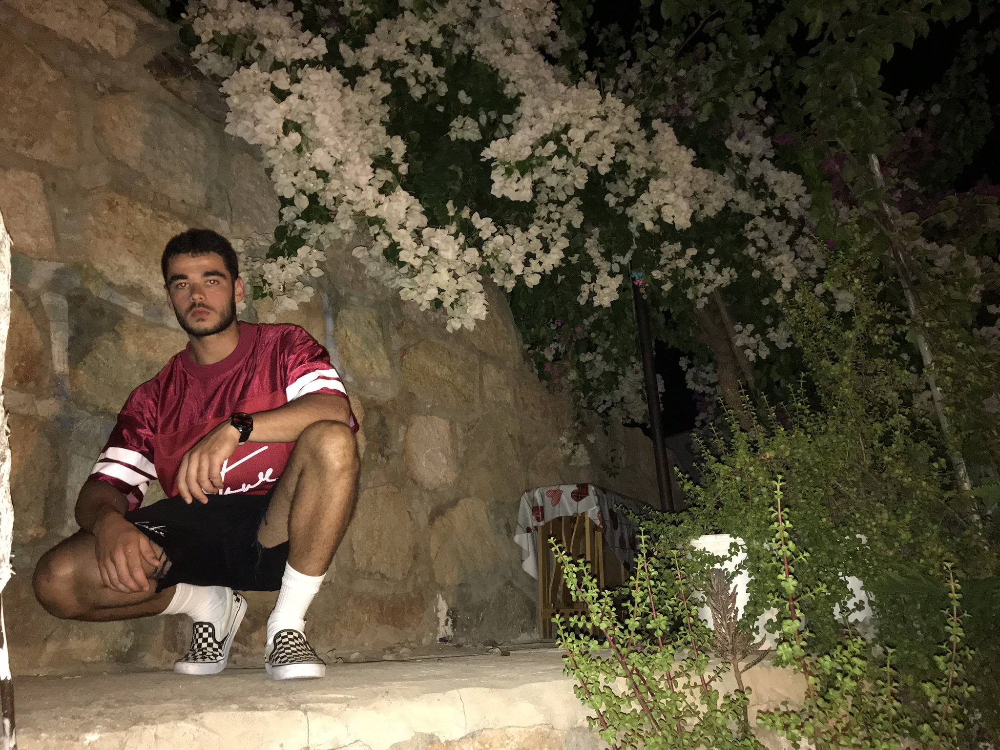

About me
Hi, I'm Omar. I'm just your average young lad who has a key interest in computers. Programming and design in particular. Over my youth, I grew up playing with computers, changing settings, layouts and other customizations. This passion grew as I endeavoured further into computer systems. Customizing the desktop then evolved into researching hardware components. I was on a path to understanding how computers work. I began installing different custom ROMs onto my Android phone in year 7 (I was 12). This gave me a better understanding of what made up an operating system.
My interest in programming arose when I was in an ICT lesson with a cover teacher. He introduced the class to HTML and CSS. I never knew what exactly made up a website before this and I was keen to learn more. The lesson was a breeze, I had my head around HTML and CSS pretty quickly. By the end of the class (1 hr) I was able to create a fully functioning and styled website just from memory while the rest of the class struggled and asked me for help.
When school ended, I went home and continued learning HTML and CSS through YouTube and different websites. I wanted to create a responsive, animated, fully functioning website.
From this interest in HTML and CSS and after making a few websites and login systems with PHP, I wanted to further my programming knowledge. I went on to create interactive websites with JavaScript and created some Android apps with Java. After this, programming became fairly straight forward as I realised all programming languages follow the same logical structure with functions, variables and classes. It was just a case of learning the different syntax.
I went on to make programs with Visual Basic, Python and C#. I also experimented with different Linux distributions, and expanded my knowledge on command lines. I then began researching binary codes and how you can convert binary codes into plain text. I researched ASCII character sets and binary colour codes, this gave me an in-depth understanding of the fundamental infrastructure between how the hardware and software layers communicate in computer systems.
I continued to expand my skills on computers by shifting my focus over to graphic design. I began creating things in Photoshop and blender. I then created my first game on Adobe Flash Pro using ActionScript 3. After this, I began creating 3D environments in Unity.
My interest in computers continues to grow today, through secondary school, to college and University. After I am finished in education, I would like to apply my knowledge and hopefully be given the opportunity to further expand my knowledge in a career.